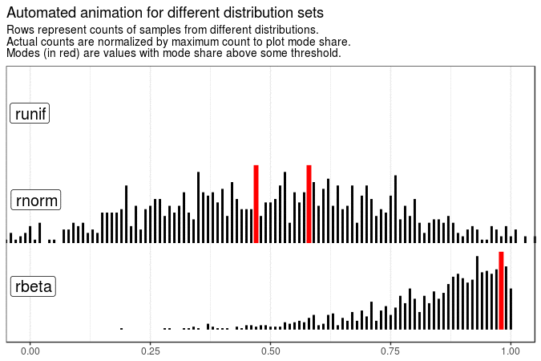
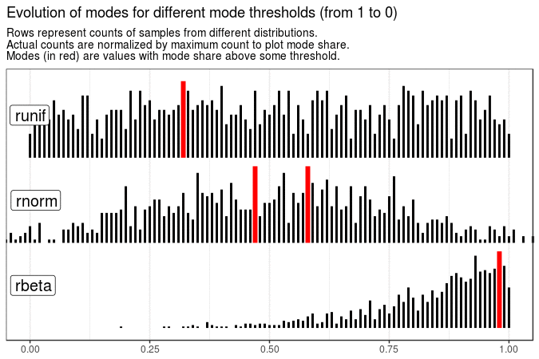
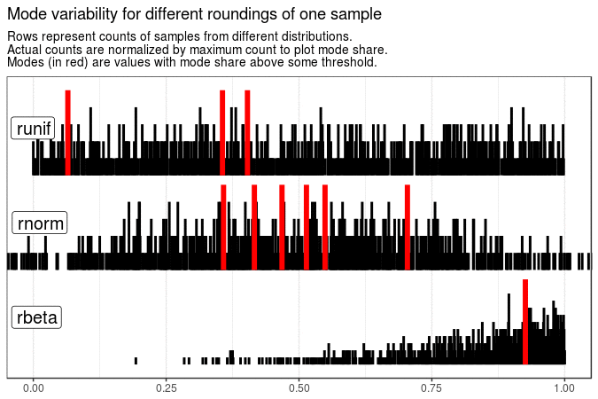
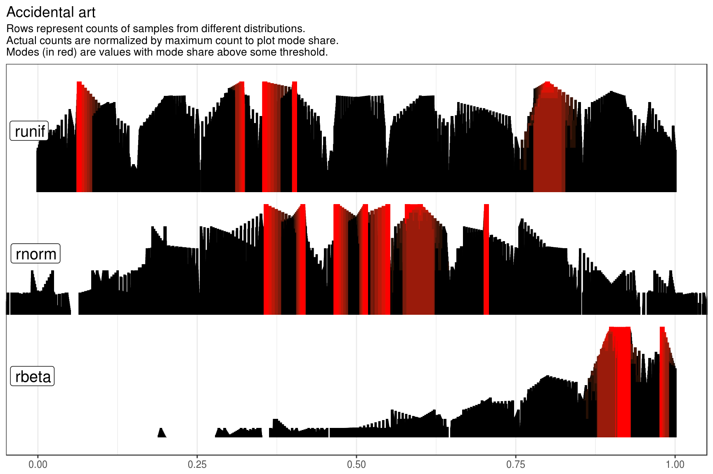

Animating mode variability with tidyverse and tweenr
Prologue
Not so long time ago I encountered the following task: given several groups of samples (one group - several samples from one distribution) make a visual presentation of sample mode variability in different groups (how sample mode changes between different samples). I decided to do this by animating these distributions with respect to their mode. The whole process can be summarised as follows:
- For every sample:
- Count its values. Sample values are considered to a certain degree of precision, e.g. to the third digit, so talking about “counting values” has reasonable background.
- Divide counts by maximum count. The output is named “mode share distribution” (made up term, didn’t find any present one). For every unique value in sample the outcome is a number between 0 (value is totally absent) and 1 (value is a strict mode). Here value is considered to be “mode” if its “mode share” is above some threshold, say 0.9. For strict thresholds 1 is used.
- For every set of group samples (first samples within groups, second samples, and so on) plot their “mode share distribution”. This is done by plotting several “mode share distributions” at once, in non-overlapping ridgeline-like fashion.
- Animate between plots. This simultaneously shows a mode variability in different groups. As just changing pictures didn’t seem like a challenge, I decided to make smooth transitions between plots. Packages tweenr (CRAN version) and gganimate (original one by David Robinson, not a soon-to-be-revolutional one by Thomas Lin Pedersen) provide core functionality for this.
Methods I ended up using (some of them were discovered during solving this task) contain surprisingly many subtle base R and tidyverse tricks. This motivated me to write a post about my solution. It heavily uses core tidyverse packages.
For educational purposes, I will slightly change the task: provided different probability distributions (by random generation R functions like rnorm), animate independent sample distributions to demonstrate mode variability.
Overview
The main point of this post is to provide a thorough code description with some highlighted tips and tricks. Considering this, the most information will be provided in code comments with some tricks described in text. I can see that provided solutions might be slightly overcomplicated but they seem to demonstrate stable behavior. Please note that this post, probably, won’t be that helpful for beginners in R, and some confident knowledge of R and tidyverse tools is needed.
Most of the code will be hidden under spoilers (text which appears after clicking on its summary, usually beginning with “Code for …”) to shrink initial post size, but I really encourage you to read them. However, only looking at plots and animations is, of course, completely fine :) They are considered to be a valuable by-product.
This post is organized as follows:
- Data generation describes the process of creating new samples from given random generators.
- Static plots describes the format of plotting data and a process of building a plot. There are also some example plots.
- Animation describes the logic behind transition between different plots and the process of creating animations. There are also some example animations.
- Bonus accidental art has an example of “accidental art” which was produced unintentionally but has an interesting look.
- Conclusion lists some lessons learned and some of my favorite tricks from this post.
We will need the following setup:
# Used tidyverse packages
suppressPackageStartupMessages(library(dplyr))
library(tidyr)
library(purrr)
library(ggplot2)
# Using current CRAN version 0.1.5
library(tweenr)
# Using current github 'dgrtwo/gganimate' version 0.1.0.9000 (commit bf82002)
library(gganimate)
theme_set(theme_bw())
animation::ani.options(interval = 1/24)
# Very important step for reproducibility
set.seed(20180614)
# Data about distributions of interest and sample size
r_funs <- list(
# Using `purrr::partial()` to create functions that expect only `n` argument
"runif" = partial(runif),
"rnorm" = partial(rnorm, mean = 0.5, sd = 0.25),
"rbeta" = partial(rbeta, shape1 = 5, shape2 = 1)
)
n_sample <- 1000Data generation
# Generate data by sampling from different distributions
# Note that all elements of `r_fun_list` should have names, which will be used
# as distribution names.
# Elements of `r_fun_list` should be functions which take only one argument `n`
# for a sample size to be generated. Use `purrr::partial` to create those.
generate_data <- function(r_fun_list, n_sample) {
pmap_dfr(
list(names(r_fun_list), r_fun_list, n_sample),
# Interestingly, due to implementation of anonymous formula functions, you
# can't use `..i` placeholders if they represent functions to be called.
~ tibble(distr = .x, value = .y(n = ..3))
)
}Considering future parallel animation, I decided to organize data “per plot”. That is: one tibble contains information about one sample for every distribution and multiple samples should be stored in list. Function generate_data() creates one tibble, which in combination with purrr::rerun() can create a list of grouped samples. Note that, for reasonable results, numbers in value columns should be rounded.
sample_data <- rerun(10, generate_data(r_funs, n_sample))
# One set of samples for examples
distr_data <- sample_data[[1]] %>% mutate(value = round(value, 2))
distr_data
## # A tibble: 3,000 x 2
## distr value
## <chr> <dbl>
## 1 runif 0.46
## 2 runif 0.51
## 3 runif 0.47
## 4 runif 0.47
## 5 runif 0.4
## # ... with 2,995 more rowsTips and tricks:
purrr::pmap_dfr()helps create a data frame output after iterating in parallel over multiple vectors. As allpurrrmappers, function can be concisely described in formula fashion addressing arguments with..1,..2and so on. However, due to internal logic ofpurrr, using..inotation is impossible if it is meant as function to be applied. Fortunately, instead of..1one can use.xor.and instead of..2-.y, which works.
Static plots
The general idea is to transform initial tibble into tibble with columns describing future plot which, essentially, will be sets (per distribution) of vertical segments. In this way, modifying pipeline from static plotting into smooth animation will be a matter of creating transitions between different plotting data (with use of tweenr::tween_state()) and animating them.
Plotting data
# Compute data for plot. Basically, it:
# - Counts values in each group.
# - Normalizes by maximum count within each group (producing 'mode shares').
# - Computes whether certain value is mode according to rule "`mode share` is
# note less then `mode_thres`".
# - Produces plotting data (including colour and size of segments).
# Here `tbl` should have 'distr' and 'value' columns.
# `mode_thres` represents minimum 'mode share' for value to be considered mode.
get_plot_data <- function(tbl, mode_thres = 1) {
tbl %>%
# Compute mode share distribution by counting value occurence in groups and
# normalize by maximum count within groups.
group_by(distr, value) %>%
summarise(n = n()) %>%
mutate(
modeShare = n / max(n),
isMode = modeShare >= mode_thres
) %>%
ungroup() %>%
# Prepare plot data
transmute(
distr, x = value,
# Distributions are plotted on integer levels of groups.
# Using factor 'distr' column is a way to control vertical order of
# distributions.
y = as.integer(as.factor(distr)),
# Here using 0.9 ensures that segments won't overlap
yend = y + modeShare * 0.9,
isMode,
colour = if_else(isMode, "red", "black"),
size = if_else(isMode, 2, 1)
)
}Function get_plot_data() takes tibble of samples and mode threshold (minimum ‘mode share’ for value to be considered mode). It produces output with one row per segment in the following format:
- distr <same type as in input> : Name of distribution. Will be used as labels.
- x <dbl> : Coordinates of segment x axis (which is enough to define x coordinate of vertical segments).
- y <dbl> : The y coordinate of lower end of a segment. To control this, supply factor
distrcolumn: different distributions will be plotted at integer y coordinates in order defined by factor levels (from bottom to top). - yend <dbl> : The y coordinate of upper end of a segment.
- isMode <lgl> : Logical value indicating whether this segment represents mode value.
- colour <chr> : Colour of the segment (red for modes, black for others).
- size <dbl> : Size of the segment line (2 for modes, 1 for others).
get_plot_data(distr_data)
## # A tibble: 297 x 7
## distr x y yend isMode colour size
## <chr> <dbl> <int> <dbl> <lgl> <chr> <dbl>
## 1 rbeta 0.19 1 1.02 FALSE black 1
## 2 rbeta 0.28 1 1.02 FALSE black 1
## 3 rbeta 0.290 1 1.02 FALSE black 1
## 4 rbeta 0.32 1 1.02 FALSE black 1
## 5 rbeta 0.33 1 1.02 FALSE black 1
## # ... with 292 more rows
get_plot_data(distr_data, mode_thres = 0.01)
## # A tibble: 297 x 7
## distr x y yend isMode colour size
## <chr> <dbl> <int> <dbl> <lgl> <chr> <dbl>
## 1 rbeta 0.19 1 1.02 TRUE red 2
## 2 rbeta 0.28 1 1.02 TRUE red 2
## 3 rbeta 0.290 1 1.02 TRUE red 2
## 4 rbeta 0.32 1 1.02 TRUE red 2
## 5 rbeta 0.33 1 1.02 TRUE red 2
## # ... with 292 more rows
distr_data %>%
mutate(distr = factor(distr, levels = c("runif", "rnorm", "rbeta"))) %>%
get_plot_data()
## # A tibble: 297 x 7
## distr x y yend isMode colour size
## <fct> <dbl> <int> <dbl> <lgl> <chr> <dbl>
## 1 runif 0 1 1.28 FALSE black 1
## 2 runif 0.01 1 1.39 FALSE black 1
## 3 runif 0.02 1 1.51 FALSE black 1
## 4 runif 0.03 1 1.51 FALSE black 1
## 5 runif 0.04 1 1.45 FALSE black 1
## # ... with 292 more rowsTips and tricks:
- While plotting several distributions organized vertically, one can compute the base y coordinate for them with
as.integer(as.factor(distr)). Using factordistrcolumn is a way to control vertical order of distributions.
Creating plots
# Adds segment layers. May be used in both static and animated plots.
# In static plots should be preceded by `ggplot(data)` in which `data` should
# have column `.frame` with all 1.
# In animated plots should be preceded by
# `ggplot(data_tweened, aes(frame = .frame))`.
# Returns a list with results of `ggplot2` constructor functions. Elements will
# be used sequentially to build plot. This list should be added to `ggplot()`
# call with `+` function (like other `ggplot2` functionality).
add_layers <- function() {
common_aes <- aes(x = x, xend = x, y = y, yend = yend,
colour = colour, size = size)
list(
# Plotting segments in two different layers to highlight mode segments.
geom_segment(
# Value of `data` argument in layer function can be a function! It will be
# applied to present data initialized in `ggplot()` call.
# Notation `. %>% ...` creates a functional sequence.
data = . %>% filter(!isMode), mapping = common_aes
),
geom_segment(data = . %>% filter(isMode), mapping = common_aes),
# Explicitly label distributions.
geom_label(
data = . %>%
# Compute all possible labels in case of factor `distr`
distinct(.frame, distr) %>%
complete(.frame, distr) %>%
# Position label on the left side and in the middle of the group plot
mutate(x = -Inf, y = as.integer(as.factor(distr)) + 0.5),
mapping = aes(x = x, y = y, label = distr),
size = 5, hjust = -0.1
),
# Tweak axes labels
scale_x_continuous(name = NULL),
scale_y_continuous(
name = NULL, labels = NULL, breaks = NULL, minor_breaks = NULL
),
scale_colour_identity(),
scale_size_identity(),
# Manually fix plot range for x axis to (0, 1).
coord_cartesian(xlim = c(0, 1)),
# Add common subtitle to describe plot. Wrap `labs()` in `list()` as
# `labs()` itself returns a list which will be appended in a wrong way.
list(labs(
subtitle = paste0(
c("Rows represent counts of samples from different distributions.",
"Actual counts are normalized by maximum count to plot mode share.",
"Modes (in red) are values with mode share above some threshold."),
collapse = "\n"
)
))
)
}
# Wrapper for constructing static plot
make_static_plot <- function(plot_data, title = NULL) {
plot_data %>%
mutate(.frame = 1) %>%
ggplot() +
add_layers() +
labs(title = title)
}Function make_static_plot() expects plot data (as output of get_plot_data()) and title of the plot. It returns a ggplot object with many segments and zooming into (0, 1) in x-axis.
Tips and tricks:
- For effective code reuse while “ggplotting”, one can create custom function
custom_fun()which should return a list with results of ggplot2 constructor functions. Usually, they are geoms but can be scales, theme elements and so on. This function can then be used as function layer withggplot(data) + custom_fun(). - Value of
dataargument in layer function can be a function! This one I discovered during solving this task and was pleasantly surprised by this functionality. A function will be applied to present data initialized inggplot()call. It is very useful when one needs to plot object for one subset of data over the other. A handy way to create those functions are with. %>% ...notation which creates a functional sequence (one of the features of magrittr pipe). Here this trick is used to plot segments for mode values over the other segments.
Example plots
distr_data %>%
get_plot_data() %>%
make_static_plot(
title = "Mode share distributions for samples rounded to 2 digits"
)
distr_data %>%
get_plot_data(mode_thres = 0.8) %>%
make_static_plot(
title = paste0(
c("Mode share distributions for samples rounded to 2 digits.",
"Relaxed definition of mode"),
collapse = " "
)
)
distr_data %>%
mutate(distr = factor(distr, levels = c("rnorm", "runif", "rbeta"))) %>%
get_plot_data() %>%
make_static_plot(
title = "Control order of distributions with factor `distr` column"
)
Animations
The general idea behind animations is to take a list of state plotting data and compute transitions between them: multiple valid plotting data for transition states between consecutive state plotting data. All “transition plotting data” will be plotted consecutively. The output sequence of plots will be animated with relatively high speed to produce smooth animation.
Transitions
# Analogous to `findInterval()` but:
# - Returns not the index of "left" `vec` element of interval but index of
# nearest element between two.
# - `vec` can be unordered.
find_nearest_ind <- function(x, vec) {
if (length(vec) == 1) {
return(rep(1, length(x)))
}
# Produce sorted vector and use `findInterval` on it
vec_order <- order(vec)
vec_sorted <- vec[vec_order]
x_ind <- findInterval(x, vec_sorted, all.inside = TRUE)
# Modify interval index by possibly adding 1 if right interval end is nearer.
x_nearest <- x_ind + (vec_sorted[x_ind + 1] - x < x - vec_sorted[x_ind])
vec_order[x_nearest]
}
# Completely match x to y
# It computes:
# - Index of the nearest `y` value to `x` value for every index of `x`.
# - Similar data, but index of nearest `x` value to `y` values that were not
# chosen as nearest ones in the previous step.
# Output is a tibble with 'from' and 'to' columns. In column 'from' all indices
# of `x` are present and in 'to' - all indices of `y` are present.
match_nearest <- function(x, y) {
matching_x <- find_nearest_ind(x, y)
rest_y <- setdiff(seq_along(y), matching_x)
if (length(rest_y) > 0) {
matching_rest_y <- find_nearest_ind(y[rest_y], x)
tibble(
from = c(seq_along(x), matching_rest_y),
to = c(matching_x, rest_y)
)
} else {
tibble(from = seq_along(x), to = matching_x)
}
}
# Return modified second argument with zero height segments in case first
# argument is `NULL`.
# This function is essential for aesthetically pleasing animation in case of
# different distribution sets. Should be used in conjunction with
# `dplyr::full_join()`.
coalesce_segments <- function(subject, reference) {
if (is.null(subject)) {
reference %>% mutate(yend = y)
} else {
subject
}
}
# Prepare data for `tweenr::tween_states()`
# `plot_data_from` and `plot_data_to` represent `get_plot_data()` outputs of
# two tables which plots should be animated one into another.
# The idea is to ensure that every segment in both "from" and "to" data
# actively takes part in transition and not just pops up in the end.
# This is achieved by doing complete match within every distribution of
# segments in "from" and "to" plot data sets.
transition_nearest_value <- function(plot_data_from, plot_data_to) {
nested_from <- plot_data_from %>% nest(-distr, .key = "dataFrom")
nested_to <- plot_data_to %>% nest(-distr, .key = "dataTo")
nested_transitions <- nested_from %>%
# Join two tables with plot data by distribution.
# Note the use of `full_join()` which enables animating data with different
# sets of distributions.
full_join(y = nested_to, by = "distr") %>%
# Modify possibly missing distributions to appear "from the ground".
mutate(
dataFrom = map2(dataFrom, dataTo, coalesce_segments),
dataTo = map2(dataTo, dataFrom, coalesce_segments)
) %>%
# Compute matching by nearest x value
mutate(
matching = map2(dataFrom, dataTo, ~ match_nearest(.x[["x"]], .y[["x"]])),
transitionFrom = map2(dataFrom, matching, ~ .x[.y[["from"]], ]),
transitionTo = map2(dataTo, matching, ~ .x[.y[["to"]], ])
)
# Return a list with pair of tibbles where corresponding pairs of rows
# represent segements to be transfromed one into another.
list(
from = nested_transitions %>% unnest(transitionFrom),
to = nested_transitions %>% unnest(transitionTo)
)
}The tweenr function for producing transition between states is tween_states(). Its core input is a list of data frames where all elements must contain the same number of rows. Every row describes parameters of the certain plotting object which will be transformed between present states.
As our states consist from essentially different objects, we will operate on pairs of consecutive states. It is our duty to match pairs of objects that will be transformed one into another. Basically, it means to say for every segment into/from which other segment it will transformed. Outline of proposed transition algorithm of plot_data_from into plot_data_to is as follows:
- Match distribution types from both data sets. This is done with
full_join()fromdplyrin combination withnest()fromtidyr. Using this type of join function is essential: it enables creating transition for pair of plot data with different sets of distributions (which is an overkill but a rather cool feature gained with little effort). If in pair plot data there is no matching distribution, the result will beNULL. - Do matching between same distributions:
- If any plot data is
NULL(usingfull_join()should ensure that there is maximum oneNULL) copy pair plotting data and modify column yend to equal y. This models “raising” segments “from the ground” of respective distribution. - If both plot data are not
NULLmatch every “from-row” with the “to-row” by nearestxcoordinate (represents sample value). To ensure that no segment “pops out of nowhere”, do similar process in reverse: for every “to-row” that wasn’t matched in previous step.
- If any plot data is
Tips and tricks:
- Index of the nearest reference point can be found by a slight modification of
findInterval(). After computingx_indwithfindInterval(x, vec, all.inside = TRUE)(herevecshould be sorted increasingly), modify the result withx_ind + (vec_sorted[x_ind + 1] - x < x - vec_sorted[x_ind]). This adds 1 (TRUEconverted to numeric value) in case right end of interval is closer than left one. - Using
full_join()can be very helpful in situation with different sets of groups. It enables later repairing of unmatched data.
Creating animations
# Tween consecutive plot data sets to be transformed one into another
# The output will be data for cycled animation: last plot will be transformed
# into the first one.
tween_cycled <- function(plot_data_list, tweenlength = 2, statelength = 2,
ease = "linear", nframes = 24) {
states <- c(plot_data_list, plot_data_list[1])
# As in result of every `tweenr::tween_states()` call column `.frame` starts
# from 1, it is needed to offset frames for every pair.
frame_offset <- (seq_along(plot_data_list) - 1) * nframes
map2(states[-length(states)], states[-1], transition_nearest_value) %>%
map2_dfr(
frame_offset,
function(pair_tbls, f_offset) {
pair_mod <- pair_tbls %>%
# Converting column `distr` to factor is needed to avoid
# 'Error in col2rgb(d)' with not correct colour name.
# This is due to not optimal treatment of character columns in current
# CRAN version of `tweenr`.
# This seems to be solved in dev. version at 'thomasp85/tweenr'.
# However, for now it is rather unstable.
# Fortunately, converting to factor should give expected results as in
# `transition_nearest_value()` it is ensured common value set and
# order of their appearence by using `full_join()`.
map(. %>% mutate(distr = as.factor(distr)))
# CRAN version of `tweenr` also changes levels of factors during
# `tween_states()`. This also should be solved in development version.
# For now, use workaround with manual patching of levels.
distr_levels <- union(
levels(pair_mod[[1]]$distr), levels(pair_mod[[2]]$distr)
)
pair_mod %>%
tweenr::tween_states(
tweenlength = tweenlength, statelength = statelength,
ease = ease, nframes = nframes
) %>%
mutate(
# Offset frames
.frame = .frame + f_offset,
# Repare columns after applying `tween_states()`
distr = factor(as.character(distr), levels = distr_levels),
isMode = as.logical(isMode),
colour = as.character(colour)
)
}
)
}
# Wrapper for constructing animation
make_animation <- function(plot_data_list, title = NULL,
tweenlength = 2, statelength = 2,
ease = "linear", nframes = 24,
filename = NULL) {
p <- plot_data_list %>%
tween_cycled(tweenlength = tweenlength, statelength = statelength,
ease = ease, nframes = nframes) %>%
# Construct plot
ggplot(aes(frame = .frame)) +
add_layers() +
labs(title = title)
gganimate(
p, filename = filename, title_frame = FALSE,
# Change resolution by supplying function for graphic device.
# Thanks to https://stackoverflow.com/a/46878163/7360839
ani.dev = function(...) {png(res = 100, ...)},
ani.width = 675, ani.height = 450
)
}Function make_animation(), besides arguments for tweenr and gganimate functions, expects a list of plotting data and a title.
Tips and tricks:
- One can change resolution (for example, to 100 ppi) of output animation in
gganimateby supplyingani.dev = function(...) {png(res = 100, ...)}. This trick is thanks to this StackOverflow answer.
Example animations
With the following animations we see that sample mode is very variable for uniform distribution (which is expected), rather variable for normal and very stable for beta distribution with shape parameters 5 and 1.
Created code enables animating samples with different distribution sets. It is also flexible enough to present evolution of plots for different roundings and definitions of mode.
# Mode variability of different samples with values rounded to 2 digits
sample_data %>%
map(. %>% mutate(value = round(value, 2))) %>%
map(get_plot_data) %>%
make_animation(title = "Mode variability for independent samples")
# Animation for tables with different distribution sets
sample_data[1:3] %>%
# Convert `distr` to factor with common levels to ensure animation stability
map(~ mutate(., distr = factor(distr, levels = sort(names(r_funs))))) %>%
# Remove distributions in tables
map2(names(r_funs), ~ filter(.x, as.character(distr) != .y)) %>%
# The same animation process
map(. %>% mutate(value = round(value, 2))) %>%
map(get_plot_data) %>%
make_animation(
title = "Automated animation for different distribution sets"
)
# Evolution of modes for different mode thresholds
map(
seq(from = 1, to = 0, by = -0.05),
~ get_plot_data(sample_data[[1]] %>% mutate(value = round(value, 2)), .x)
) %>%
make_animation(
title = "Evolution of modes for different mode thresholds (from 1 to 0)",
nframes = 6
)
# Mode variability of one sample with different roundings
map2(sample_data[1], 3:1, ~ mutate(.x, value = round(value, .y))) %>%
map(get_plot_data) %>%
make_animation(
title = "Mode variability for different roundings of one sample",
tweenlength = 3, statelength = 1
)
Bonus accidental art
This piece of “accidental art” I created unintentionally when supplied tweened plot data for different roundings to make_static_plot():
map2(sample_data[1], 3:1, ~ mutate(.x, value = round(value, .y))) %>%
map(get_plot_data) %>%
tween_cycled() %>%
make_static_plot(title = "Accidental art")
Conclusion
- Sometimes a rather simple task can lead to pretty complicated solutions (if one feels like accepting a challenge).
- Visualization of mode variability for different distributions can be done by creating animation with transitions between independent sample distributions (highlighting modes).
- Along the journey of solving small tasks, several tips and tricks were found:
purrr::pmap_dfr()helps create a data frame output after iterating in parallel over multiple vectors. Shorthand formula notation for function should be used with caution when one of the input vectors contain functions to be applied.- While plotting several distributions organized vertically, one can compute the base y coordinate for them with
as.integer(as.factor(distr))(distrbeing name of the distribution stored as character or factor). - For efficient “ggplotting” one can create custom function
custom_fun()which should return a list with results ofggplot2constructor functions. It can then be used as function layer withggplot(data) + custom_fun(). - Value of
dataargument inggplot2layer function can itself be a function! It will be applied to present data initialized inggplot()call. It is very useful when one needs to plot objects for one subset of data over the other. A handy way to create those functions are with. %>% ...notation which creates a functional sequence (one of the features ofmagrittrpipe). - Index of the nearest reference point can be found by a slight modification of
findInterval()(used withall.inside = TRUE) with adding 1 when right end of interval is closer than left one. - Using
full_join()can be very helpful in situation with different sets of groups. It enables later repairing of unmatched data. - One can change resolution (for example, to 100 ppi) of output animation in
gganimateby supplyingani.dev = function(...) {png(res = 100, ...)}.
## R version 3.4.4 (2018-03-15)
## Platform: x86_64-pc-linux-gnu (64-bit)
## Running under: Ubuntu 16.04.4 LTS
##
## Matrix products: default
## BLAS: /usr/lib/openblas-base/libblas.so.3
## LAPACK: /usr/lib/libopenblasp-r0.2.18.so
##
## locale:
## [1] LC_CTYPE=ru_UA.UTF-8 LC_NUMERIC=C
## [3] LC_TIME=ru_UA.UTF-8 LC_COLLATE=ru_UA.UTF-8
## [5] LC_MONETARY=ru_UA.UTF-8 LC_MESSAGES=ru_UA.UTF-8
## [7] LC_PAPER=ru_UA.UTF-8 LC_NAME=C
## [9] LC_ADDRESS=C LC_TELEPHONE=C
## [11] LC_MEASUREMENT=ru_UA.UTF-8 LC_IDENTIFICATION=C
##
## attached base packages:
## [1] methods stats graphics grDevices utils datasets base
##
## other attached packages:
## [1] bindrcpp_0.2.2 gganimate_0.1.0.9000 tweenr_0.1.5
## [4] ggplot2_2.2.1 purrr_0.2.5 tidyr_0.8.1
## [7] dplyr_0.7.5
##
## loaded via a namespace (and not attached):
## [1] Rcpp_0.12.17 pillar_1.2.3 compiler_3.4.4 plyr_1.8.4
## [5] bindr_0.1.1 tools_3.4.4 digest_0.6.15 evaluate_0.10.1
## [9] tibble_1.4.2 gtable_0.2.0 pkgconfig_2.0.1 rlang_0.2.1
## [13] cli_1.0.0 yaml_2.1.19 blogdown_0.6 xfun_0.1
## [17] stringr_1.3.1 knitr_1.20 rprojroot_1.3-2 grid_3.4.4
## [21] tidyselect_0.2.4 glue_1.2.0 R6_2.2.2 rmarkdown_1.9
## [25] animation_2.5 bookdown_0.7 magrittr_1.5 backports_1.1.2
## [29] scales_0.5.0 htmltools_0.3.6 assertthat_0.2.0 colorspace_1.3-2
## [33] labeling_0.3 utf8_1.1.4 stringi_1.2.2 lazyeval_0.2.1
## [37] munsell_0.4.3 crayon_1.3.4